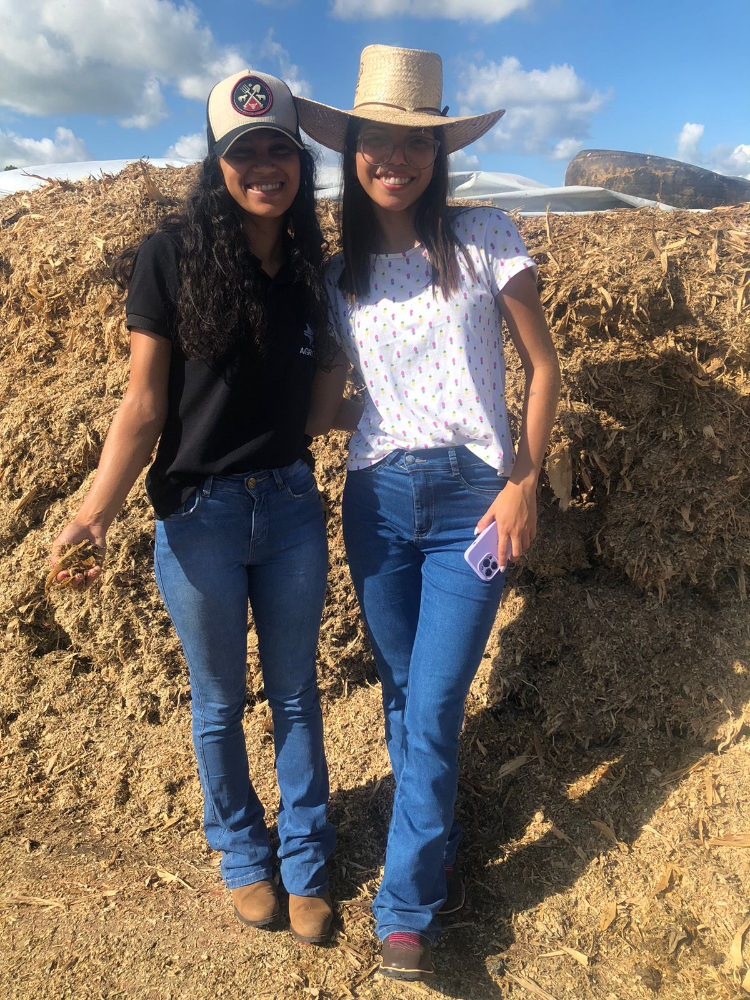
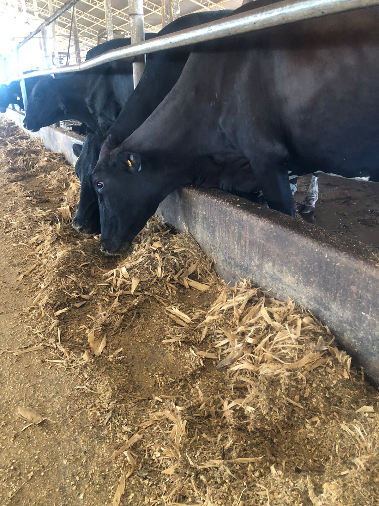
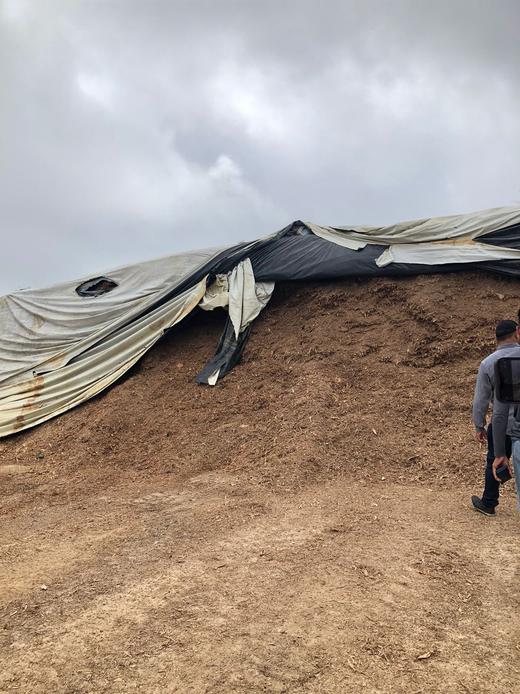
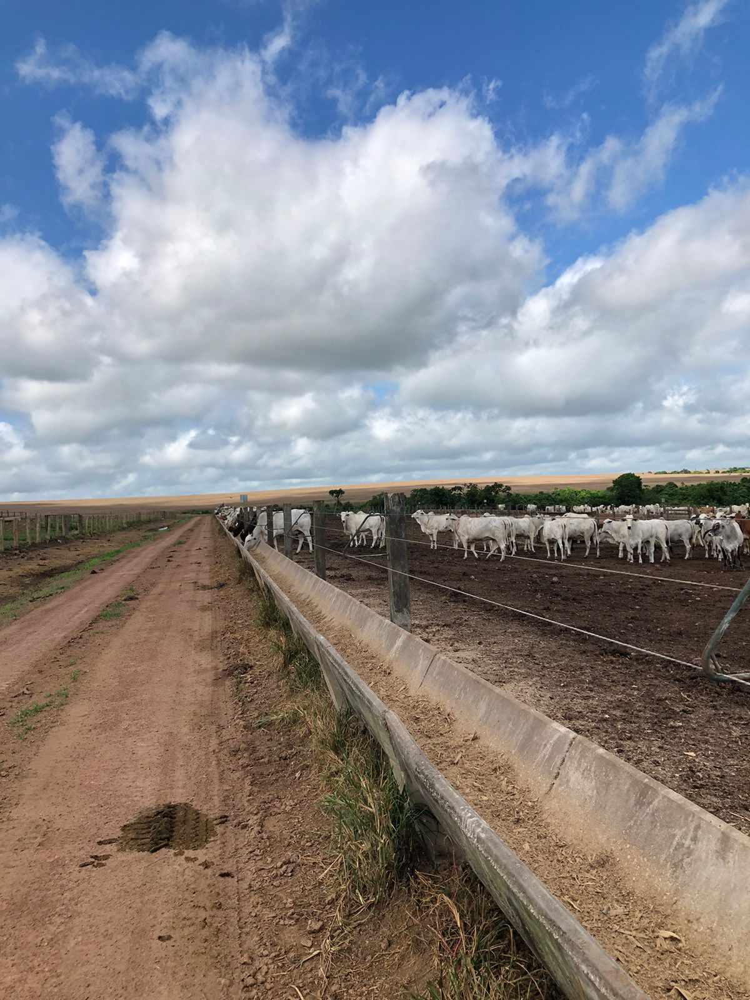

"Sobre nós"
A A19 Nutrição é uma empresa de consultoria animal, voltada para a área da nutrição, onde atuamos na formação de pastagens, capineiras, produção de silagem, feno, elaboração de dietas balanceadas para ruminantes e não ruminantes. Estamos no mercado há três anos, atuando na região do nordeste paraense, com sede no município de Castanhal.
Equipe de trabalho
A equipe é formada por técnicos em agropecuária, técnicos em zootecnia, técnicos em agronegócio, graduandos em agronomia.
CONHEÇA NOSSA EQUIPEPúblico alvo:
São os produtores rurais com atividades voltadas para pecuária
Missão:
Nossa missão é garantir a nutrição dos animais, trabalhando com diversas possibilidades de alimentações alternativas, e assim mostrar dados dos benefícios do nosso produto, e garantir ao produtor que investir em nutrição é um bom negócio.
Hoje falaremos sobre a produção da silagem de milho na alimentação de ruminantes: características, objetivos e o por quê de adquirir o nosso produto.
Produção de Silagem.
A silagem de milho é o produto da conservação via fermentação anaeróbica da planta inteira do milho, sendo um alimento bastante importante na nutrição de ruminantes, devido seu alto valor nutritivo, principalmente no que se refere ao teor de energia. Com esse produto alternativo, o produtor tem a possibilidade de oferecer um produto de boa qualidade para os animais e superar os períodos de seca.
Através da comprovação dos inúmeros benefícios que a silagem de milho traz ao ruminante, mesmo que em alguns casos seu custo de produção seja expressivo, o retorno financeiro é certo, a possibilidade dos animais entrarem em terminação em menos tempo, consumirem uma alimentação de alto valor biológico é maior. Dessa forma, o ideal é que essa produção de silagem seja feita por profissionais capacitados para que se tenha um produto de qualidade e com menores custos, e a A 19 nutrição é a empresa que você precisa para lhe garantir toda essa eficiência na produção.
 Técnicas de campo da A19 Nutrição avaliando as condições de armazenamento da silagem e avaliando a aceitabilidade da silagem em uma fazenda de confinamento de pecuária leiteira.
 Equipe A19 Nutrição fazendo o acompanhamento das instalações de armazenamento e avaliando a aceitabilidade da silagem de snaplage de milho em fazenda de confinamento na pecuária de corte